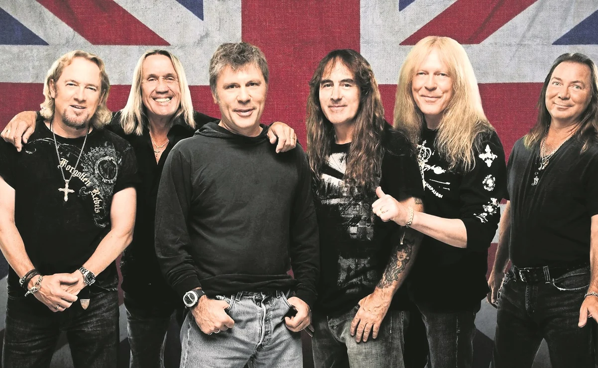

Rock Season
Las mejores bandas de Rock de la historía juntas en un gran festival!
No te las pierdas! Reserva tu entrada YA!
ACDC/Power Up
AC/DC es una banda de hard rock británica-australiana, formada en 1973 en Australia por los hermanos escoceses Malcolm y Angus Young. Sus álbumes se han vendido en un total estimado de 200 millones de copias,34 embarcándose en giras multitudinarias por todo el mundo, y sus éxitos han musicalizado varias producciones cinematográficas sobresalientes.5678 Son famosas sus actuaciones en vivo, resultando vibrantes y exultantes espectáculos de primer orden.
Iron Maiden/The Book of Souls
Iron Maiden es una banda británica de heavy metal fundada en 1975 por el bajista Steve Harris. Es considerada una de las bandas más importantes de todos los tiempos en este género. Ha vendido más de 100 millones de discos en todo el mundo, a pesar de haber contado con poco apoyo de la radio y la televisión comercial durante la mayor parte de su carrera.
Metallica/Hardwired..
Metallica es una banda estadounidense de rock1 originaria de Los Ángeles, pero con base en San Francisco desde febrero de 1983. Fue fundada en 1981 en Los Ángeles por Lars Ulrich y James Hetfield, a los que se les unirían Dave Mustaine y Ron McGovney. Estos dos músicos fueron después sustituidos por el guitarrista Kirk Hammett y el bajista Cliff Burton respectivamente.
Rock Season
El festival se celebra en Buenos Aires en el Hipódromo de San Isidro. Este evento ha sido coordinado desde el año pasado para que sea el mejor evento inolvidable El programa es muy completo, ya que van a participar las mejores músico, y también van a ver bandas sorpresa.
No te los podes perder! Pedí información para comprar tus entradas y elegir el mejor lugar para verlos!